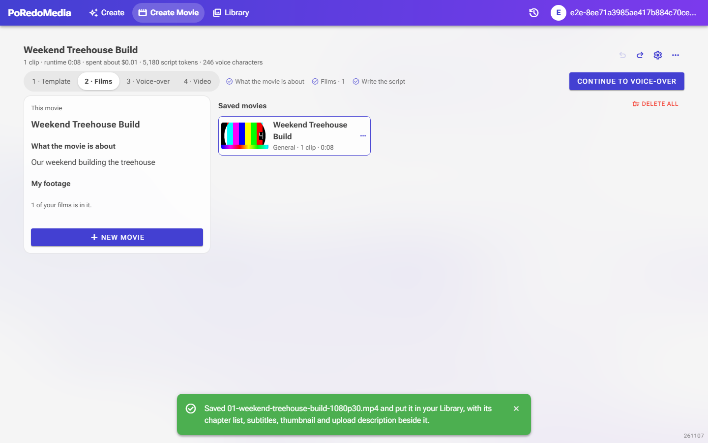

Create Movie: Delete all, Remove all, no shot list
9 Nov 2026. From the browser test, against the dev app.
Before
The Films step had a "Shots to film" list with a Suggest shots button. Saved movies could only be deleted one at a time from each card's menu, and films only left the list one at a time with their × button.
After
- "Shots to film" and Suggest shots are gone.
- Delete all sits beside "Saved movies" (red, asks first; videos already in the Library stay).
- Remove all sits beside Add films once the list has two or more films (they stay in the Library).
